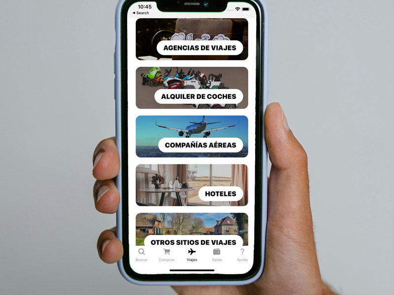
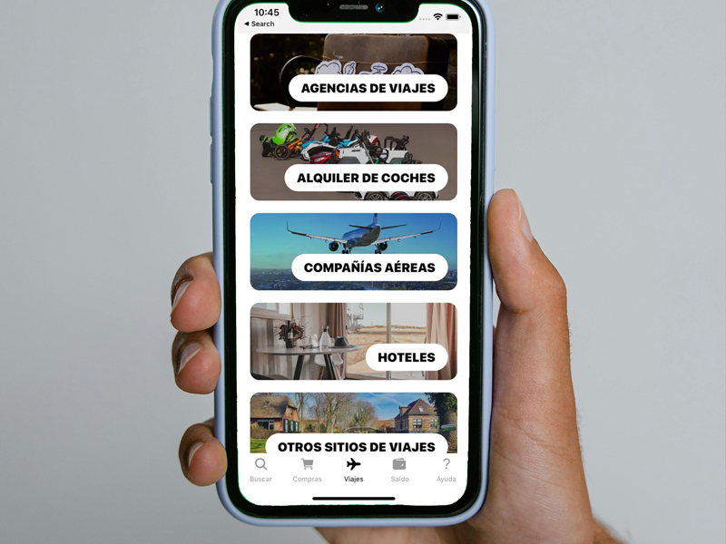

beruby
Plataforma de cashback y ahorro online. Trabajo centrado en mejora de experiencia de usuario, claridad visual y optimización del flujo de conversión.
 

Descripción
Diseño UX/UI para el portal de cashback beruby, así como creación de materiales de marketing digital, incluyendo banners, newsletters y landing pages.
El objetivo del proyecto fue simplificar la interfaz y mejorar la comprensión del valor del cashback para el usuario final. Se trabajó sobre jerarquía visual, reducción de ruido y claridad en los puntos de acción principales.
Se rediseñaron componentes clave, se optimizó el flujo de registro y se mejoró la consistencia visual entre secciones.
Skills
- UI Design
- UX Optimization
- HTML
- CSS
- Design Systems
- Responsive Layout
Responsabilidades
- Diseño de interfaz
- Prototipado
- Rediseño de identidad
- Mejoras de usabilidad